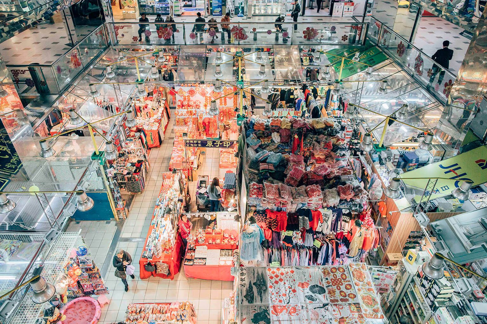
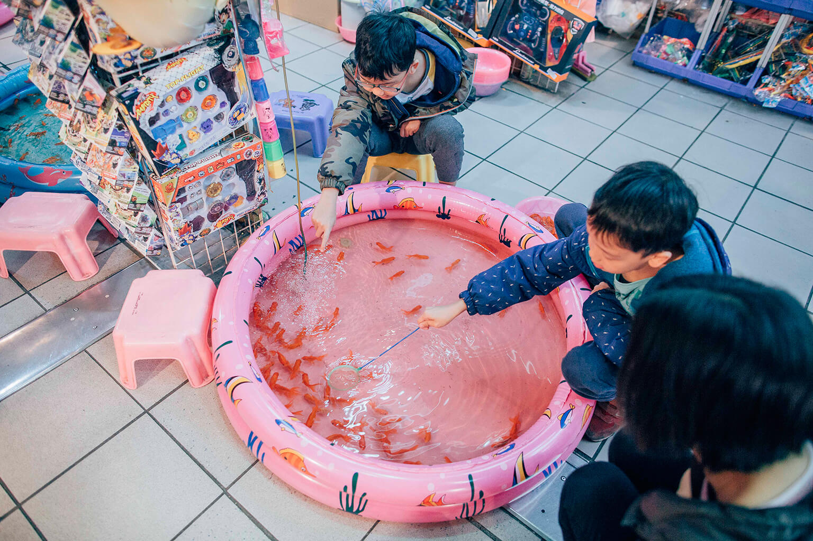
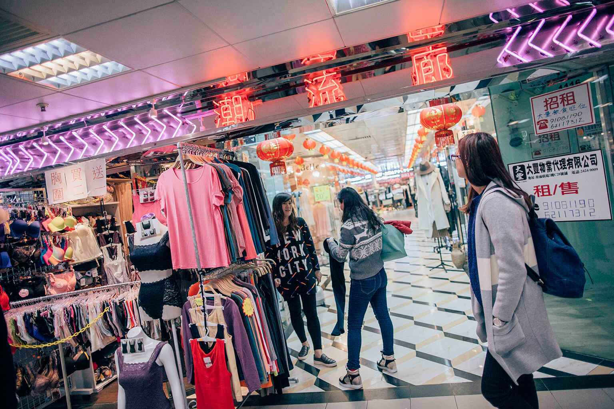

在連鎖霸權的香港商場裏，
這一座還容得下白手起家和市井人情
by 端傳媒記者 陳倩兒 發自香港
在香港商場倒模複製鏈上，葵涌廣場堪稱特例，它其貌不揚，極少遊客光顧，在地產霸權蔓延的時代中，庇護着一些白手起家的創業夢，和主顧之間的人情味。

閱讀文章
香港是名副其實的購物天堂，據統計，零售面積有一億平方呎，其中四成屬於商場，商場數量高達千個。
龐大數字的背後，是單調重複。這些商場大多由新鴻基、新世界、恆基、領匯等大型發展商操持，走進商場，会發現商鋪組合、建築材質，甚至採光方式都大同小異。
於1991年開業的葵涌廣場是香港商場克隆產業鏈上的一個特例。它的外牆和室內光線一樣黯淡，內裏藏有1000多家小店，店鋪格局隨意，邊界不清，比起現代化商場，更像市集或地攤。
在全港眾多光鮮亮麗的商場裏，葵涌廣場其貌不揚，也極少遊客光顧。然而，過去25年裏，它在本土市民中經久不衰，在地產霸權蔓延的時代中，至今庇護著一些白手起家的創業夢，草根街坊的日常所需，和主顧之間的人情味。
一個紮根社區的商場
葵涌廣場樓高四層，推開一扇厚重的玻璃門，就闖進了人流不息、嘈雜喧鬧的大迷宮。
地下一層，一位中年女士剛走近書報雜貨店，還未開口，老闆就遞給她一包香菸。「你又知道我要什麼？」女士鬼馬一笑，付錢就走。
在二樓的玉器鋪，一位抱著小孩的婦女去找老闆改佛珠，簡單交代要求，老闆笑着催她離開：「你走啦，先給小孩洗澡，回頭來取就是。」
在三樓的改衣裁縫店，一位80多歲的婆婆拿著新衣來改尺寸，她是住在附近的老街坊，老闆笑着說：「這次又買什麼靚衫啦？其實你買這麼多，到底有沒有穿的？」
荷蘭註冊建築師、香港人何尚衡長期研究香港的商場模式，在他眼裏，葵涌廣場是香港商場中的另類，充滿舊時代的街坊氣息。
今年30歲的何尚衡介紹說，香港大型商場的歷史始於1966年，那一年海運大廈在尖沙咀落成，成為亞洲第一個購物商場，此後數十年中，香港商場越開越多，亦越開越高檔，越開越雷同。
2003年，香港政府開始實施自由行政策，為了迎合高消費力的旅客，發展商不斷升級商場，主要手法是翻新裝修，引入可承擔更高租金的中高檔連鎖品牌，本土小店陸續被趕走。
「你引入這個品牌，我也引入這個品牌，商場就越來越像了。」何尚衡說，這是資本的邏輯，「引入在別的商場裏已經獲得成功的品牌，就可以規避風險」。
與此同時，這些商場越發脫離鄰近社區。「許多居民眼看着商場不斷翻新升級，但自己的生活也沒有跳到那個水平，就感覺商場和自己沒什麼關係。」何尚衡說。
然而，商場不僅僅是一個商業交易的場所，也是城市規劃的「工具」。「一個新市鎮有了商場後，鄰近的居民就有了消費、社交、互動的場域，慢慢形成『市中心』和『社區』。」香港註冊建築師黎雋維說。
葵涌廣場就是一個開在新市鎮的商場。它座落於傳統工業區葵青區，1991年開業時是該區僅有的商場，採取上居下鋪的形式，商場附近環繞着大片的公屋群、工廠大廈和繁忙的貨櫃碼頭。
開業25年來，這兒漸漸成了工人、學生和鄰近居民的匯聚點。商場附近有葵芳鐵路站和巴士總站，不少剛下班的碼頭工人和白領都喜歡在忙碌一天後來逛一逛，剛下課的中學生最愛來這兒聊天或拍拖，到了晚上再坐巴士或坐地鐵回家。而許多住在附近的居民，也習慣了來商場裏滿足一家大小的生活所需。
目前，商場內除了大家樂、三聯書店和幾家電訊公司外，大多數是獨立個體戶：書報社、涼果鋪、裁縫店、時裝店、中西醫小診所、牛雜車仔麵...... 一切街坊生活需要的，幾乎都能在這兒找到。

免於大型發展商霸權的自由
時至今天，葵涌廣場還保存着特色小店以及和鄰近社區的緊密關係。考究背後原因，最核心的是商場店鋪業權分散，擺脫了大型發展商的控制和塑造。
葵涌廣場的發展商為南豐集團，與其它地產發展商只租不賣的政策不同，南豐集團於1990年將600多個店鋪樓花全部賣予市民，葵涌廣場目前由商場業主代表以及住宅業主代表所組成的業主立案法團進行管理。
法團的一名代表對端傳媒記者介紹說，葵涌廣場的很多業主出租店鋪時，不會考慮什麼品牌、檔次：「這裏就是靈活，總之交到租就可以，業主不會理會你賣什麼，你今天賣時裝，明天賣首飾，後天賣鞋都可以，沒人理你。」這位代表委員不願意透露姓名，他年約50歲，自1990年開始成為商場業主。
現在42歲的陳星任是葵涌廣場的一個商家。他自1996年開始就在葵涌廣場開煜輝玉器鋪，一開就是20年。前幾年，陳星任曾經想轉到葵涌廣場旁邊的新都會商場開店，接觸更廣的客源，那是新鴻基地產1993年開發的中檔商場。
他主動接觸新都會，申請租約，沒想到新都會商場給他的回覆是：玉器是古老行業，商場不歡迎。

沒有甄選的小市民創業夢
這家「古老」玉器鋪的故事不是特例。
何尚衡介紹說，大型發展商壟斷的商場，一般會針對租客設置門檻和裝修規格，租約一般簽三年，但其中也會不時考察其營業額，決定是否續租。
端傳媒在葵涌廣場內訪問了女性內衣店、牛雜車仔麵、日系時裝店等11家店鋪，許多店家表示，他們在別的商場或街鋪很難找到合適的生存空間。
22歲的姚聖瑋和他的女朋友目前在葵涌廣場開日系時裝店VVVIN。兩人還在讀大學，酷愛日本風尚，很早以前就在Instagram上賣日系時裝，積累一定客源後盤算着開店。
「我們到處看鋪，銅鑼灣、旺角那些地舖實在太貴了，有些商場是便宜，但根本就是『死場』，沒有人流。」姚聖瑋說，物色了近三個月後，他們才找到葵涌廣場三樓一家50呎左右的商鋪，租金每月一萬三千，前期投資10萬元，半年前他們終於成功開店。
事實上，按呎租計算，葵涌廣場的租金並不低廉。不願透明名字的法團代表介紹說，由於人流不絕，自開業至今，300呎的商鋪已經從約200多萬升至約2000多萬，商鋪租金也增幅迅猛。2014年，曾有媒體報導葵涌廣場旺鋪呎租高達800多元，相當於於尖沙咀的租金。
但為什麼許多想創業的市民依然在這裏找到生存空間？法團代表說，這是因為在業權分散的情況下，大家靈活經營——「小業主發揮小業主的創意，商鋪發揮商鋪的想像力。」
業主與租客：抗爭和默契
這名法團代表解釋說，商場在94年前並不興旺，由於當時商鋪面積較大，租金貴，放租很難；後來許多業主開動腦筋，想到了「劏舖」：將大商鋪像大西瓜一樣劏開，變成一片小鋪，容易放租，總租金加起來又比放租一個大鋪更高。
經過22年不斷「劏舖」，葵涌廣場的商鋪數量由落成時的600多個演變成目前的1000多個，店舖的買賣和租賃完全交易，業主立案法團也很難統計商場目前一共有多少業主和確切的店舖數量。
這1000多個小店鋪，大的約300呎，小的只有二三十平方呎，全場最小的店舖，甚至只有1平方呎。「業主就租給你了，你怎麼用要看你的智慧了。」商場業主立案法團的代表委員說。
因為店舖面積不大，店家只能想盡方法擺賣貨物，超過店舖租用界線，佔用商場的共用過道。在90年代末，商場法團及管理公司一度打算嚴厲管理，限制店舖「越界」，沒想到卻遭遇一批店家聯手抗爭。
現在40歲的威哥當年是商鋪聯會的主席，2000年時，他一家一家店舖去動員，最終成功組織400多家店舖聯手和商場法團談判。幾番會談之後，法團最終妥協，拋出橄欖枝——每家店的貨物最多可以超越商鋪門口的一個黑色地磚和兩個灰色地磚，簡稱「一黑兩灰」，商鋪聯會最終接受建議。
「這個沒有白紙黑字，是商户、業主、租客、管理公司默認和心照的。」法團的代表委員回憶說，後來他們作為管理者，也意識到一個管理的大原則：「不要管死，也不能完全放生，灰色地帶要拿捏得很準。」
而那個只有一呎的商鋪，由於有了「一黑兩灰」的灰色地帶，也迎來熱搶：許多人排隊以「日租」形式，放一張小桌子，拿着麥克風，大聲推銷各種「神奇的清潔用品」，惹來市民駐足圍觀。
「這肯定是全香港最雜的商場，哈哈！」法團的代表委員大笑着說。

業主與租客：抗爭和默契
大家都變了，葵廣還停留在80年代
在荷蘭註冊建築師何尚衡看來，正正由於商場業主眾多，法團也由商場業主和住宅業主等不同委員組成，葵涌廣場要進行統一的翻新和改動並不容易。
「其實大家今天覺得葵涌廣場這麼特別，是因為其它好多商場都以現在的審美標準來翻新了，但葵涌廣場還停留在它興建的上世紀80年代。」何尚衡說。
不僅僅室內風格停滯不前，一些商品價格亦是如此。三樓的老店冰冰果汁開業已超過20年，西瓜汁一直維持5元一杯的價格；冰冰果汁旁邊的Yummy 雪糕店，圓筒雪糕今天仍然賣10元3個雪糕球。
那份主顧之間的人情味，也多少維持不變。Yummy 雪糕店是出生基層的楊生楊太所開的。楊太年輕時是家庭主婦，由於在香港工廠打工的楊生失業，49歲那年，楊太毅然決定出來闖闖，接手朋友在葵涌廣場的舖位來賣橡皮糖和雪糕，沒想到生意穩步上升，廣受學生哥歡迎。
有一對情侶學生哥，中學放學時常來Yummy 拍拖吃雪糕，後來上了大學，出來工作了，也常常一起回來光顧Yummy，直到2015年年底兩人結婚，特意請楊生楊太去婚禮現場賣雪糕，給賓客嚐嚐。
「好多客都經常回來探望我們，現在我一天不開店都不捨得啊！」楊太說。
無形之中，自然生長，葵涌廣場已不僅僅是一個消費場所，也是消費者，消費者與店家之間交往互動的空間，凝聚了抽象的人情與回憶。
香港人劉碩偉中學時天天逛葵涌廣場，買碟、買文具，吃小食，現在他已經30多歲，依然對葵涌廣場念念不忘，不時回去逛逛：「我經常想啊，如果有一天香港被喪屍攻陷了，那麼只剩下葵涌廣場就夠了，我可以躲在裏面不出來。」
不過，何尚衡也進一步反思，儘管許多市民對這個本土商場情有獨鍾，但關鍵的不是生硬複製這個商場的模式。
「你想像，如果有一天，香港的所有商場都變得跟葵涌廣場一樣，大家也會覺得很單調沉悶。」何尚衡說，最美好的是多元發展，讓香港生長出多一些不同的葵涌廣場。